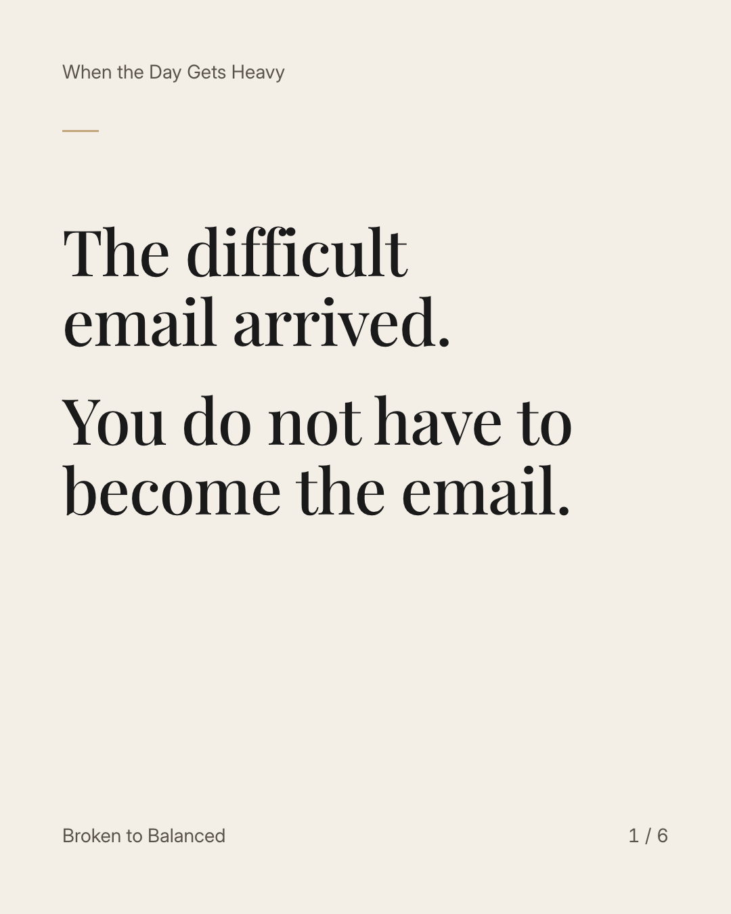
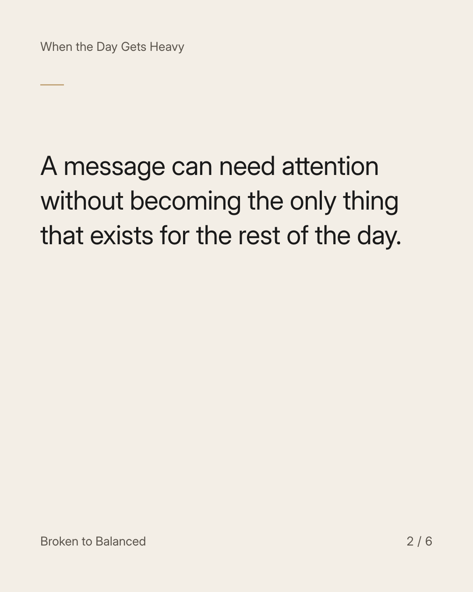
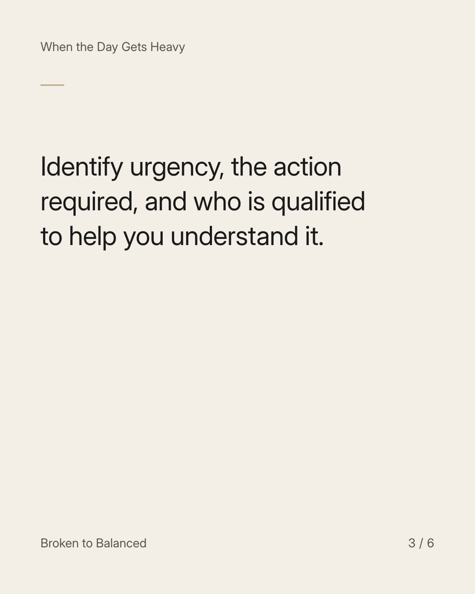
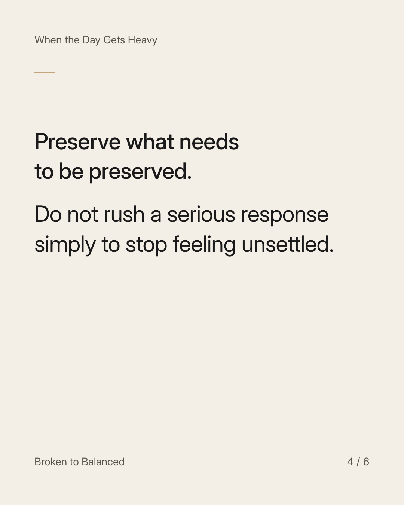
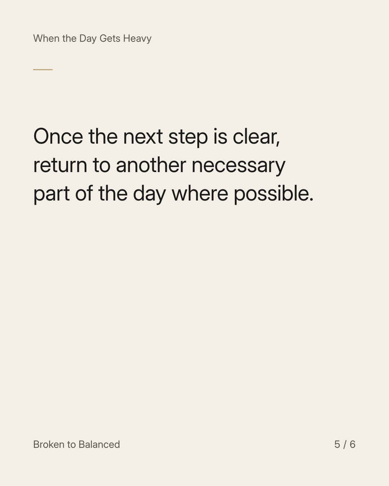
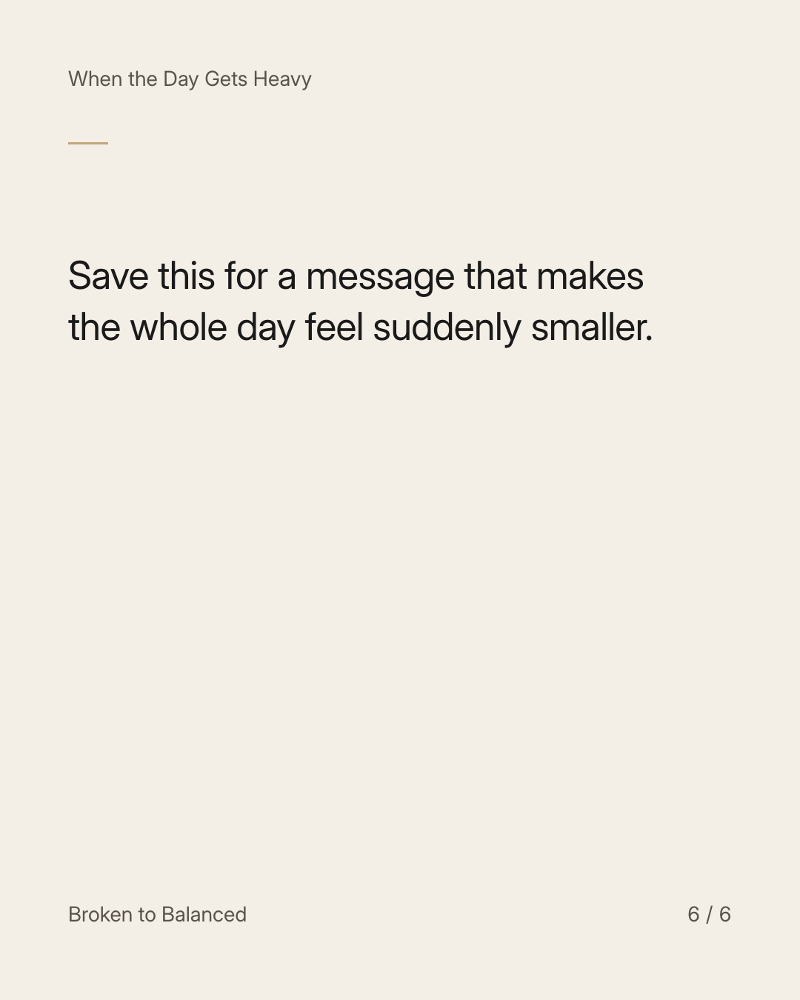

Exact text and accessibility text
The difficult email arrived. You do not have to become the email.
Slide 1 of 6. The difficult email arrived. You do not have to become the email.


Exact text and accessibility text
A message can need attention without becoming the only thing that exists for the rest of the day.
Slide 2 of 6. A message can need attention without becoming the only thing that exists for the rest of the day.


Exact text and accessibility text
Identify urgency, the action required, and who is qualified to help you understand it.
Slide 3 of 6. Identify urgency, the action required, and who is qualified to help you understand it.


Exact text and accessibility text
Preserve what needs to be preserved. Do not rush a serious response simply to stop feeling unsettled.
Slide 4 of 6. Preserve what needs to be preserved. Do not rush a serious response simply to stop feeling unsettled.


Exact text and accessibility text
Once the next step is clear, return to another necessary part of the day where possible.
Slide 5 of 6. Once the next step is clear, return to another necessary part of the day where possible.


Exact text and accessibility text
Save this for a message that makes the whole day feel suddenly smaller.
Slide 6 of 6. Save this for a message that makes the whole day feel suddenly smaller.
Exact caption
Plain-text fallback: select and copy the caption.